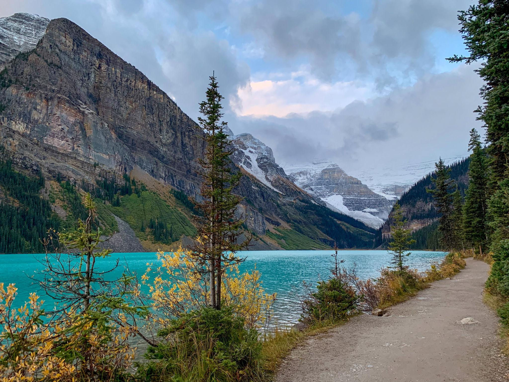

← 레이크 루이스
🥾 Lakeshore Trail
Lake Louise
⭐ 누구나 부담 없이 에메랄드빛 레이크 루이스를 가장 가까이에서 즐길 수 있는 산책 코스

📅 우리 일정
Day 3 오후 (모든 일정의 기본 코스)
🏞 기대 풍경
💎 에메랄드빛 레이크 루이스
🧊 웅장한 Victoria Glacier
🏨 Fairmont Chateau Lake Louise
🌲 호숫가 숲길과 잔잔한 산책로
📸 로키를 대표하는 최고의 포토 스팟
📏 기본 정보
🚶 걷는 거리
왕복 약 4km
⏱ 걷는 시간
약 45~60분
💪 난이도
매우 쉬움
📈 고도차
거의 없음
🚻 편의시설
✔ 화장실 (주차장 및 샤토 호텔)
✔ Fairmont Chateau Lake Louise 카페 및 레스토랑
✔ 기념품점
✔ 호숫가 벤치와 휴식 공간
🎒 준비물
👟 편한 운동화
📷 카메라 또는 휴대폰
🧥 얇은 바람막이
🧴 선크림 및 선글라스
💡 여행 Tip
✔ 이른 아침이나 저녁에는 관광객이 적어 더욱 여유롭게 산책할 수 있습니다.
✔ 호숫가를 따라 걸으며 빅토리아 빙하를 가장 가까이에서 감상할 수 있습니다.
✔ 카누 선착장과 페어몬트 호텔이 가까워 함께 둘러보기 좋습니다.
✔ 레이크 아그네스 또는 Plain of Six Glaciers 트레킹 전후 가볍게 걷기 좋은 코스입니다.
📍 Google Maps
🗺 트레일 지도
← 레이크 루이스